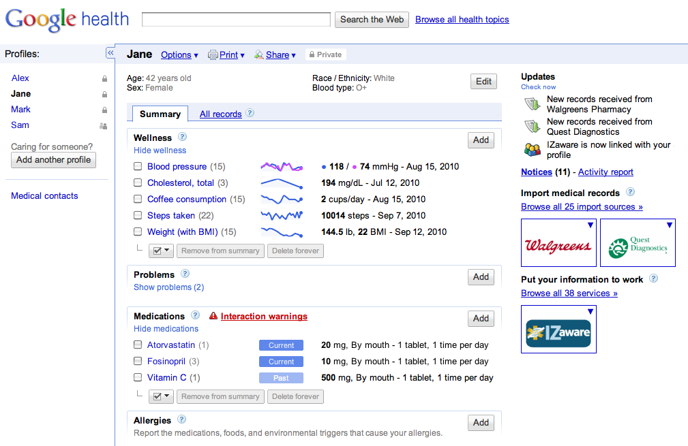
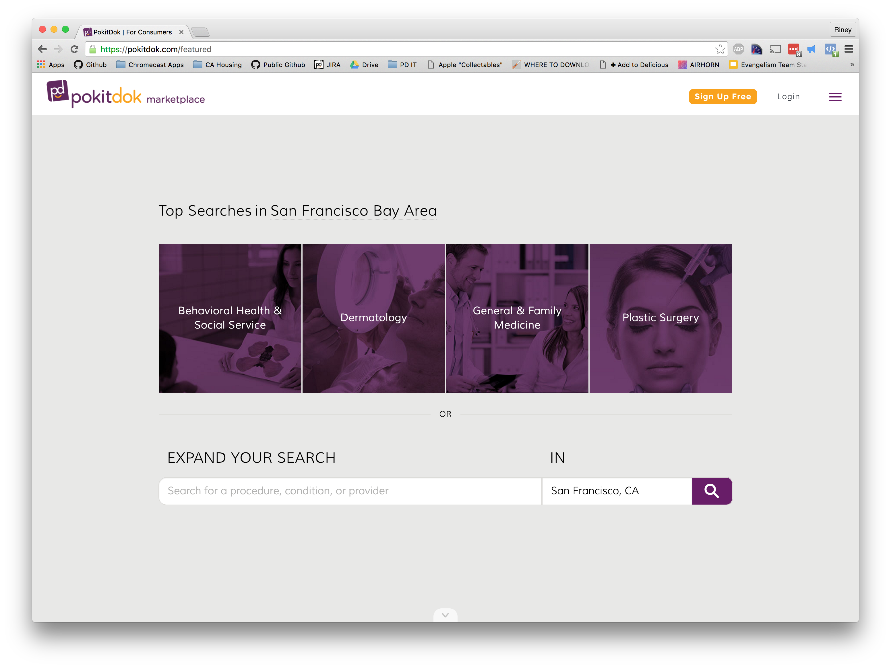
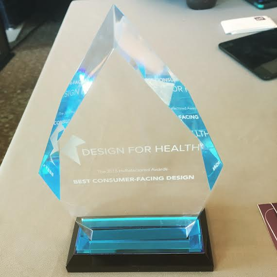
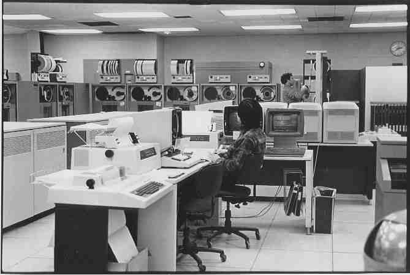

layout: true class: slide <img src="pd-logo.png" class="pd-logo"> --- class: center,middle # Some Words On APIs (including ours) #### John Riney, Technical Evangelist, PokitDok --- # /about/me .center[<img src="riney_apple.jpg" class="big-img" alt="nerd glamour shot">] --- # /about/pokitdok -- ### "The Operating System For The Business Of Health" --- class: center,middle # ? --- .center[<img src="bobross.jpg" class="really-big-img" alt="happy little healthcare">] --- class: center,middle UX by itself == # (◕︵◕) --- .center[<img src="tc.png" class="big-img" alt="techcrunch article">] .center[Source: "What’s Really Killing Digital Health Startups", 10/30/2015, by John Sung Kim (@JohnSungKim)] .center[[http://techcrunch.com/2015/10/30/whats-really-killing-digital-health-startups/](http://techcrunch.com/2015/10/30/whats-really-killing-digital-health-startups/)] --- class: center,middle .center[] --- class: center,middle UX + connectivity == # (ﾉ◕ヮ◕)ﾉ*:･ﾟ✧ --- .center[] --- class: center,middle .center[] --- class: center,middle <iframe width="860" height="460" src="https://www.youtube.com/embed/6pIEmdBozeE" frameborder="0" allowfullscreen></iframe> --- class: center, middle # <3 --- class: center,middle .center[<img src="patientland.jpg" class="really-big-img" alt="patientland">] --- class: center, middle # $ --- class: center,middle .center[<img src="law.jpg" class="big-img" alt="law">] --- class: center,middle .center[] --- class: center, middle .dolla-sign[$] --- class: center, middle # “If you ain't talkin' money, # I don't wanna talk.” -- .right[— 2 Chainz, noted philosopher and pharmaceutical industry expert ] --- class: center, middle # # --- class: center, middle # # # # # # --- class: center, middle # #1 -- Medical bills are the primary cause of personal bankruptcy in the U.S. --- class: center, middle # </3 --- class: center, middle # $12,900 -- Average out of pocket spend before insurance starts paying, for families on HDHPs --- class: center, middle # $42.8 billion -- National uncompensated care costs (charity care + bad debt), 2014 --- class: center, middle # Healthcare has changed --- class: center, middle # <del>Healthcare has changed</del> # Healthcare _has been_ changing --- class: center, middle # <del>Healthcare has changed</del> # <del>Healthcare _has been_ changing</del> --- class: center, middle # Healthcare is an absolute dumpster fire .center[<img src="dumpsterfire.jpg" class="big-img" alt="dumpster fire">] --- class: center, middle # The core .center[<img src="core.jpg" class="big-img" alt="not this">] --- class: center, middle # The core == old, crusty legacy systems # (insurance companies and EHRs) --- class: center, middle # Insurance companies == payers --- class: center, middle Eligibility (coverage, plan structure, deductibles) Claims and claims status Enrollment Authorizations Referrals ### ... AKA ASC X12 5010. --- class: center, middle # A simple question. --- # X12 Eligibility request ```html HL*1**20*1~NM1*PR*2*Premium Gold Insurance Co.*****PI*0123456~HL*2*1*21*1~NM1*1P* 1*Back*Has*Your***XX*9876543210~HL*3*2*22*0~TRN*1*89368DC6A14E4E529AA876ED416E8A9F *1453915417~NM1*IL*1*A-lot*Lifts****MI*MEM10001~DMG*D8*19820315*M~EQ*98^33~ ``` #### (the spec for this one request is 552 pages) --- # Our Eligibility request ```javascript { "member": { "birth_date": "1982-03-15", "first_name": "Lifts", "last_name": "A-Lot", "id": "MEM10001" }, "provider": { "first_name": "Has-Your", "last_name": "Back", "npi": "9876543210" }, "service_types": ["professional_physician_visit_office", "chiropractic"], "trading_partner_id": "premium_gold_insurance" } ``` --- # X12 Eligibility response ```html HL*1**20*1~NM1*PR*2*Premium Gold Insurance Co.*****PI*0123456~HL*2*1*21*1~NM1*1P* 1*Back*Has*Your***XX*9876543210~HL*3*2*22*0~TRN*2*89368DC6A14E4E529AA876ED416E8A9F* 1453915417NM1*IL*1*A-lot*Lifts****MI*MEM10001~N3*2150 Pleasant Drive~N4*Sunny*CA* 900010001~DMG*D8*19820315*M~DTP*291*D8*20141001~EB*B**98****10~EB*A**33*****.20~ ``` ### auggggghhhhhh --- # Our Eligibility response ```javascript { "coverage": [ "coinsurance": [ { "benefit_percent": 0.2, "service_types": [ "chiropractic" ] } ], "copay": { "copayment": { "amount": "10", "currency": "USD" }, "service_types": [ "professional_physician_visit_office" ] } ], "plan_begin_date": "2014-10-01", (...and so on...) } ``` --- class: center, middle ### Acredited Standards Committee (ASC) started work in 1979. --- # Literally big data .center[] --- # Consumer tech from 1979 .center[<img src="apple2plus.jpg" class="big-img" alt="apple 2+">] --- class: center, middle APIs > legacy “standards” actual APIs > lip service to APIs open > not no startup / maintenance / transactional costs > any of those things --- class: center, middle ## EPIC --- class: center, middle # We lower the barriers ### and let developers build the experiences they want --- class: center, middle which leads to more # <3 --- class: center, middle # We lower the barriers ### and process more transactions --- class: center, middle ### To quote one of our Ph.D. data scientists: --- class: center, middle ### To quote one of our Ph.D. data scientists: # “Nom nom nom, more data” --- class: center, middle .center[<img src="graph.png" class="really-big-img" alt="PD data science graph">] --- class: center, middle # The elephant in the room. --- class: center, middle .center[<img src="hippo.jpg" class="big-img" alt="bad animal joke">] --- class: center, middle # HIPPA --- class: center, middle ### “What does the HIPAA Privacy Rule do?” -- .center[“It gives patients more control over their health information. It sets boundaries on the use and release of health records.”] -- .right[— the freakin' HIPPA FAQ at] .right[http://www.hhs.gov/hipaa/for-individuals/faq/187/what-does-the-hipaa-privacy-rule-do/index.html] --- class: center, middle # <3 --- # Links * PokitDok <br> [https://pokitdok.com](https://pokitdok.com) * PokitDok Platform <br>[https://platform.pokitdok.com](https://platform.pokitdok.com) * These slides <br>[https://rin3y.github.io/slide-decks/hxrefactored-2016](https://rin3y.github.io/slide-decks/hxrefactored-2016) * @riney